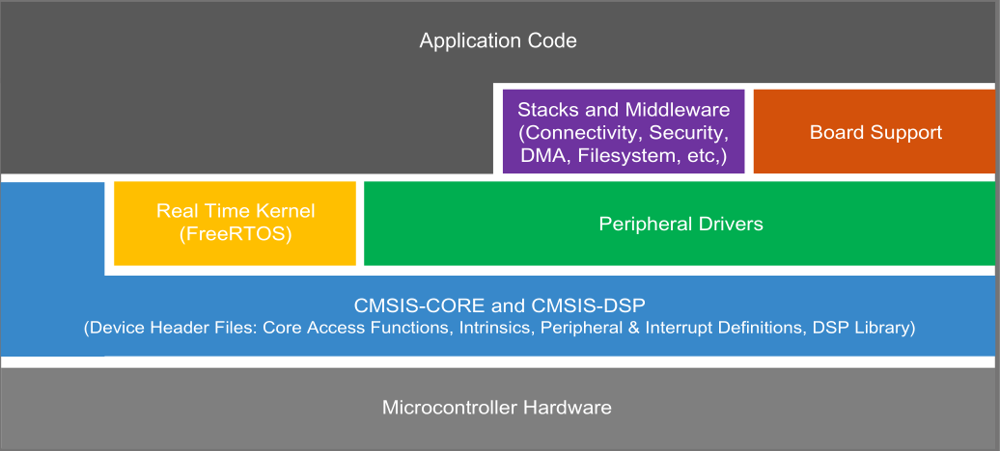

BSP、SDK是什么
BSP
BSP 即 Board Support Package，板级支持包。它来源于嵌入式操作系统与硬件无关的设计思想，操作系统被设计为运行在虚拟的硬件平台上。对于具体的硬件平台，与硬件相关的代码都被封装在BSP中，由 BSP 向上提供虚拟的硬件平台，BSP与操作系统通过定义好的接口进行交互。BSP 是所有与硬件相关的代码体的集合。一个成熟的商用操作系统，其被广泛应用的必要条件之一就是能够支持众多的硬件平台，并实现应用程序的硬件无关性。一般来说，这种无关性都是由操作系统实现的。但对于嵌入式系统来说，它没有像 PC 机那样具有广泛使用的各种工业标准、统一的硬件结构。各种嵌入式系统各不同的应用需求就决定了它一般都选用各自定制的硬件环境，每种嵌入式系统从核心的处理器到外部芯片在硬件结构上都有很大的不同。这种诸多变化的硬件环境就决定了无法完全由操作系统来实现上层软件与底层硬件之间的无关性。因此各种商用实时操作系统，都采用了分层设计的方法，它将系统中与硬件直接相关的一层软件独立出来，称之为 Board Support Package，简称为 BSP。顾名思义，BSP是针对某个特定的单板而设计的。如果没有单板支持软件包，则操作系统就不能在单板上运行。并且它对于用户（指开发者）也是开放的，用户可以根据不同的硬件需求对其作改动或二次开发。
对于运行 Linux 系统的 SOC，SOC 厂商都会提供基于 SOC 评估板以用于 uboot 以及 linux 内核的 BSP。而对于 MCU 运行 RTOS. 更多的是需要开发者根据 MCU 开发包基于实际硬件情况去开发自己的 BSP。
SDK
芯片制造商针对 MCU 的软件开发一般会提供一些源码以及工具等资源的开发包。注意该 SDK 定义仅是针对于 MCU 嵌入式软件开发领域的定义
MCU开发包SDK内容
芯片内核相关源码
如 Cortex-M 内核的 MCU，一般会提供 CMSIS 组件包，对内核的软件编程都是基于 CMSIS 进行开发的，同时也会提供基于该芯片的内核启动汇编代码文件
芯片外设的相关源码
提供外设访问的相关软件接口源码
BSP 模板工程代码
提供 Keil/IAP/Eclipse 等IDE示例工程
板载外设的相关源码
一般提供针对评估板载外设的驱动代码
评估板的示例代码
提供基于此款或者此系列 MCU 评估板的 BSP 示例代码
中间层库
一般提供 FreeRTOS、FatFs、USB Stack 等开源代码
文档
驱动代码使用指南以及API参考等
配置工具
- 时钟树配置
- 外设配置
- 引脚功能配置
- 自定义配置的 IDE 工程生成
NXP MCUXpresso SDK
MCUXpress Software Development Kit (SDK) 提供了 NXP 旗下 Kinetis 以及 LPC 系列 MCU 的 板级支持包，其相关资源图示如下：

相关的资源可以在 Welcome | MCUXpresso SDK Builder (nxp.com) 下载
支持的 IDE 以及交叉编译工具链
keil
提供 MCUXpresso SDK 源码的 Pack
IAR
MCUPresso
NXP 基于 eclipse 开发的 IDE
ARM CC
ARM-GCC